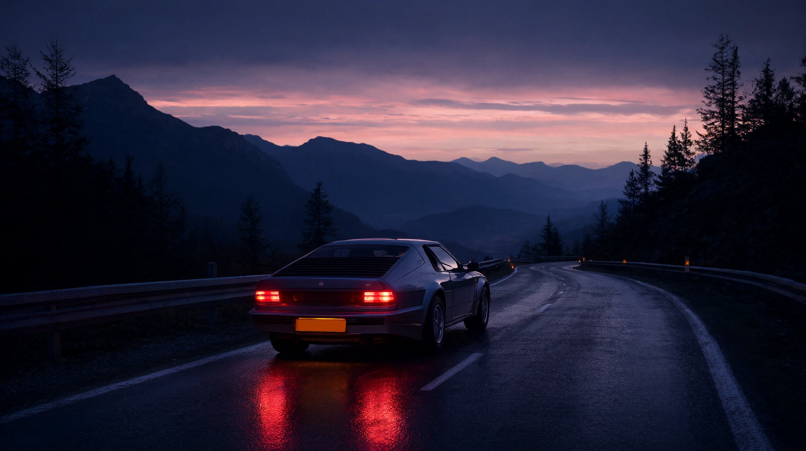

Pocket Roads

A 3.2 km dusk descent. Keep the toy on the road, or chase the coupe in virtual mode.
Best: —
Paused
Run complete
Total time 0.0 s
Place your toy
Tap or drag inside the play area to align the camera with your toy car.